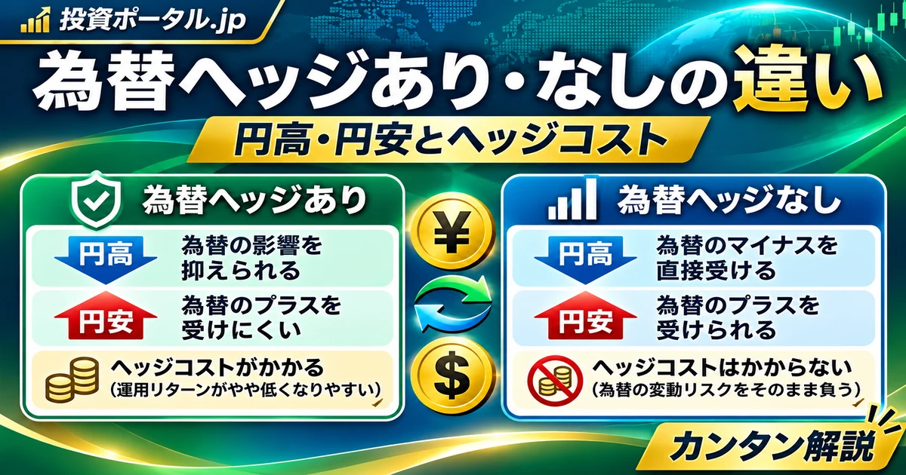

投資の基礎知識 ／ 投資信託・ETF・為替
為替ヘッジあり・なしの違いとは？円高・円安の影響とヘッジコストを初心者向けに解説
為替ヘッジあり は海外資産の為替変動による影響を抑えることを目指し、 為替ヘッジなし はその影響を受けやすい仕組みです。ただしヘッジありでも損失は生じ、ヘッジなしでも必ず不利になるわけではありません。円高・円安の計算例と金利差を通じて違いを整理します。

目次
為替ヘッジとは？
為替ヘッジ とは、外国の株式・債券などに投資するとき、為替相場の変化による円換算損益を抑えるための手法です。運用会社が為替予約などを利用し、将来の為替変動による損益の一部または大部分を相殺することを目指します。
ヘッジは完全な遮断ではありません。ヘッジ比率、通貨のずれ、取引時点、費用などによって為替の影響は残ります。
為替ヘッジあり・なしの違い
| 比較項目 | 為替ヘッジあり | 為替ヘッジなし |
|---|---|---|
| 為替変動の影響 | 抑えることを目指す | 直接受けやすい |
| 円高の影響 | 為替差損を抑えられる場合がある | 円換算評価額が下がりやすい |
| 円安の影響 | 為替差益を得にくい | 円換算評価額が上がりやすい |
| ヘッジコスト | 発生する場合がある | 通常、為替ヘッジコストはない |
| 主な注意点 | 費用・ヘッジ精度・資産価格変動 | 為替変動による損益・資産価格変動 |
「ヘッジなし＝費用ゼロ」ではありません。信託報酬、売買コスト、為替交換費用などは別途発生し得ます。ヘッジあり・なしのいずれも投資対象そのものの値下がりリスクがあります。
円高・円安は海外資産にどう影響する？
米ドル建て資産なら、ドルで見た価格が変わらなくても、円換算の評価額は為替で変わります。 リスクオフと円高の関係 も参考になります。
円換算評価額 ＝ 外貨建て資産価値 × 為替レート（円／外貨）
為替ヘッジなしは「海外資産の値動き」と「為替変動」の両方が円建てリターンに影響します。ヘッジありは為替要因の影響を抑えることを目指しますが、コスト等により損益は変わります。
円高・円安の計算例
初期投資150万円、1ドル＝150円で10,000ドル分の資産を購入。資産のドル建て価格は変わらないと仮定します。
| 条件 | 円換算評価額 | 投資開始時との差 |
|---|---|---|
| 開始時：150円／ドル | 10,000×150＝150万円 | 0円 |
| ケースA：135円／ドル（円高） | 10,000×135＝135万円 | −15万円（−10％） |
| ケースB：165円／ドル（円安） | 10,000×165＝165万円 | ＋15万円（＋10％） |
手数料・税金・分配金を考慮しない単純化した例です。 為替ヘッジなし の計算であり、ヘッジあり商品の実際の損益を示すものではありません。
海外資産の値動きと為替変動が重なる場合
資産がドル建てで10％上昇しても、円高が同時に進むと円建てでは損失になることがあります。
| 項目 | 計算結果 |
|---|---|
| 投資開始時 | 10,000ドル×150円＝150万円 |
| 資産価格10％上昇後 | 11,000ドル |
| 円高後の円換算 | 11,000ドル×135円＝148万5,000円 |
| 円換算損益 | −1万5,000円（−1％） |
円建てリターン ＝（1＋外貨建てリターン）×（1＋為替変動率）−1
＝1.10×0.90−1＝−1％
10％と−10％を単純に足して0％とするのではなく、 掛け合わせる ことが重要です。為替変動率は「1ドル当たりの円の価格」の変化で計算しています。
為替ヘッジの仕組み
例えば将来受け取る米ドルを、為替予約であらかじめ定めた条件で円に換える取引を組み合わせれば、ドル安・円高による影響を相殺する方向に働きます。投資信託では為替予約を更新（ロール）しながら運用することがあります。
- 海外資産を保有 株式・債券などの外貨建て資産に投資。
- 為替予約などを組み合わせる 外貨売り・円買いの取引などで為替変動の影響を抑える。
- 取引を更新し、差額を反映 金利差等を反映した予約レートや取引条件、ヘッジ比率に応じて結果が変わる。
将来の為替を無条件に現在のスポットレートで固定できるわけではありません。対象通貨・比率・実施時期・運用方法は商品ごとに異なります。
為替ヘッジコストとは？
為替予約の価格には、一般に 通貨間の短期金利差 が反映されます。円より米ドルの短期金利が高いとき、円投資家が米ドル資産の為替リスクを抑えるために米ドル売り・円買いを行うと、通常はコスト方向に働きます。
金利差による概算例
| 通貨 | 短期金利（仮定） |
|---|---|
| 日本円 | 年率1％ |
| 米ドル | 年率4％ |
| 差 | 約3％ポイント |
この条件では、単純化すると年率約3％相当の差があります。為替予約の先物レートは、スポットレートと両通貨の金利・期間などの関係で形成されるため、この差がヘッジに伴う経済的な負担の目安となります。
約3％は投資信託の年間ヘッジコストを確定する数字ではありません。 実際には通貨ベーシス、売買スプレッド、取引条件、ロール時点、金利変動などが影響します。ヘッジコストは信託報酬と同じ費用項目とは限らず、運用損益に反映される場合があります。
為替ヘッジありでも損失が出る理由
- 投資先の株式・債券自体が値下がりする
- 金利差等を背景とするヘッジコストがかかる
- ヘッジ比率が100％とは限らない
- ヘッジ対象通貨と実際の投資対象通貨が異なる場合がある
- 為替予約の更新時期・取引条件によって損益が変わる
- 信託報酬・売買費用などの運用コストがかかる
為替ヘッジは元本保証ではありません。 為替変動を抑えても、資産価格下落や信用リスクなどは残ります。
為替ヘッジあり・なしはどちらが有利？
どちらかが常に有利ということはありません。円高局面ではヘッジありが為替差損を抑えることがありますが、円安局面ではヘッジなしが為替差益を得やすくなります。一方、ヘッジありには金利差等に伴う費用・収益の影響があります。
- 為替相場と日本・海外の短期金利差
- ヘッジコスト・信託報酬などの費用
- 投資期間と資金を使う予定の通貨
- 株式・債券などの投資対象
- 自分が許容できる円建て評価額の変動
将来の為替相場を正確に予測することは困難です。円高・円安の予想だけで商品を決めず、投資目的とリスクを確認しましょう。
株式型と債券型では為替ヘッジの意味が違う？
| 比較 | 海外株式 | 海外債券 |
|---|---|---|
| 資産自体の主なリスク | 株価・企業業績など | 金利変動・信用リスクなど |
| ヘッジ後も残るもの | 株価変動リスク | 債券価格・信用リスク |
| 為替の位置づけ | 株価と為替の双方が円建て収益に影響 | 債券の値動きに対し為替の影響が大きい場合がある |
どちらの資産でも為替ヘッジの適否を一律に断定できません。債券の利回りがヘッジコストで相殺される場合もあるため、投資対象の性質と費用を一緒に見ます。
為替ヘッジと金利の関係
| 用語 | 意味と関係 |
|---|---|
| 政策金利 | 中央銀行の金融政策上の基準となる金利。短期市場金利に影響 |
| 短期金利 | 短い期間の資金取引の金利。通貨間の差がヘッジコストに特に重要 |
| 長期金利 | 長期国債利回りなど。債券価格や経済見通しに関係 |
| 為替ヘッジコスト | 短期金利差に加え、通貨ベーシスや取引条件等が影響 |
長期国債利回りの差を、そのままヘッジコストと見なすのは誤りです。 詳しくは 金利の種類と関係 、 政策金利 、 長期金利 、 実質金利 をご覧ください。
NISAで海外投資信託・ETFを選ぶ際の確認点
NISAは一定の投資利益を非課税とする制度ですが、 為替ヘッジの有無と税制上の扱いは別問題 です。購入する商品が該当するNISA枠の対象か確認しましょう。
- 「為替ヘッジあり・なし」の表示
- 投資対象資産と実質的な通貨エクスポージャー
- ヘッジ比率・方針
- 信託報酬・経費率・売買費用
- ヘッジコストの仕組み
- 分配方針とリスク説明
- NISA対象商品かどうか
国内籍投資信託と海外ETFでは、購入通貨、外貨決済の有無、為替交換、保有・分配の扱いなどが異なる場合があります。円で買えることと為替リスクがないことは同義ではありません。 投資信託とETFの違い も参考にしてください。
商品資料では何を確認する？
投資信託の 交付目論見書 、交付運用報告書、月次レポートなどで次を確認します。
- 為替ヘッジ方針（原則ヘッジ、部分ヘッジ、原則なし等）
- 実質的な投資対象通貨とヘッジ比率
- 費用・リスク・為替予約の取扱い
- ベンチマークが円換算かヘッジ付きか
- 運用実績と基準価額の推移
「為替ヘッジあり」と書かれていても、ヘッジの具体的な方法・対象通貨・比率は商品によって異なります。資料の注記まで読みましょう。
初心者が誤解しやすいポイント
- ヘッジありなら損失が出ない？ → 資産自体の下落や費用で損失は出ます。
- ヘッジなしなら必ず高リターン？ → 円高時には為替差損が生じ得ます。
- 円高なら海外資産は必ず値下がり？ → 外貨建て価格は上がることもあり、円換算は両方で決まります。
- ヘッジコスト＝信託報酬？ → 別の概念です。
- ヘッジコストは一定？ → 短期金利や市場環境で変化します。
- 長期金利差がそのままヘッジコスト？ → 主に短期金利差が関係します。
- ヘッジありなら為替の影響ゼロ？ → 比率や通貨のずれなどで影響が残ります。
- 円建て投資信託なら為替リスクなし？ → 円で購入できても、実質的な投資対象が海外資産なら為替リスクがあり得ます。
初心者向けチェックリスト
- 投資対象は何か
- どの通貨の影響を受けるか
- 為替ヘッジの有無
- ヘッジ比率と運用方針
- 円換算評価額に与える為替の影響
- ヘッジコストの仕組み
- 信託報酬とその他の費用
- 価格・金利・信用などの商品リスク
- 投資期間と資金の使途
- 同じ指数に連動する商品との違い
比較するときは「ヘッジあり・なし」だけでなく、ベンチマークや通貨、総費用、投資目的を揃えて確認しましょう。
FAQ｜よくある質問
為替ヘッジとは何ですか？
海外資産に投資するときの為替変動の影響を、為替予約などで抑えることを目指す仕組みです。
為替ヘッジあり・なしは何が違いますか？
ありは為替変動の影響を抑えることを目指し、なしは円高・円安の影響を受けやすい点が違います。
為替ヘッジありなら円高でも損しませんか？
いいえ。投資対象の値下がりやコストなどで損失が生じます。
為替ヘッジなしは円安になると有利ですか？
他の条件が同じなら円換算評価額を押し上げる方向に働きますが、資産価格下落などで損失になる場合もあります。
為替ヘッジコストとは何ですか？
為替予約などで為替変動を抑える際に生じる経済的な負担で、主に短期金利差などが関係します。
ヘッジコストは金利差で決まりますか？
短期金利差が重要ですが、通貨ベーシス、スプレッド、取引条件などでも変わります。
為替ヘッジありは長期投資に不利ですか？
一律には言えません。長期の費用負担と円建て変動を抑える効果の両方を考えます。
NISAでは為替ヘッジあり・なしのどちらが良いですか？
NISAだから一方が有利とは言えません。投資対象、費用、リスク許容度などで判断が異なります。
円建て投資信託にも為替リスクはありますか？
あります。円で購入しても、実質的に外貨建て資産へ投資する場合は為替の影響を受け得ます。
為替ヘッジありでも為替差損益が発生しますか？
発生する場合があります。ヘッジ比率、対象通貨の違い、取引時期などによって為替影響が残ります。
まとめ
- 為替変動の影響： ヘッジありは影響を抑えることを目指し、なしは円高・円安の影響を受けやすい。
- ヘッジコスト： 主に通貨間の短期金利差が関係するが、固定ではなく実際の負担は市場条件によって異なる。
- 資産自体のリスク： ヘッジありでも株式・債券の値下がりや信用リスクは残る。
為替ヘッジの有無だけで優劣を決めず、投資対象、費用、リスク、投資期間を総合的に確認しましょう。
参考資料・一次情報
- 日本銀行 ：金融市場・為替・金利関連の解説
- 金融庁：NISA特設ウェブサイト ：制度・対象商品の確認
- 投資信託協会 ：投資信託の仕組み、リスクと費用
- 日本証券業協会 ：金融商品の基礎知識
- 日本取引所グループ ：ETF等の商品・制度情報
制度・費用・ヘッジ方針は最新の公式資料と各商品の交付目論見書等をご確認ください。数値例はすべて架空で、特定商品の実績ではありません。
ご利用にあたっての注意事項
本記事は一般的な金融教育・情報提供を目的とし、特定の投資信託、ETF、証券会社の推奨や売買勧誘ではありません。投資には価格変動・為替変動・金利・信用などのリスクがあり、元本保証はありません。税制や商品条件は変更されることがあります。最新の公式資料をご確認のうえ、ご自身の判断と責任でご検討ください。